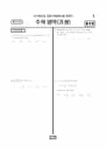

문제지

시험지 만들기준비하고 있어요. 열리면 아래 탭에서 바로 쓸 수 있어요.
2018학년도 대학수학능력시험 · 2017년 11월 시행
2018학년도 수능 수학 가형 1등급컷은 원점수 92점(추정), 표준점수 최고점은 130점입니다.
원점수 1등급컷은 공식 발표값이 아니라 EBSi·입시기관 값입니다. 등급별 값은 등급컷 표, 출처 구분은 데이터 원칙에 있습니다.

정답 변경 없음
이의신청 6문항
시험 전체 관련 보도 4건은 2018학년도 대학수학능력시험 회차 페이지에 모아 두었어요.
한국교육과정평가원이 교육부 보도자료로 공개한 표준점수 도수분포로 계산했습니다.
EBSi 응답자 기준으로 가장 많이 틀린 문항은 30번(4점, 주관식)이고, 오답률은 97.3%입니다. 오답률 50%를 넘은 문항은 5개입니다.
| 순위 | 문항 | 배점 | 오답률 | 정답 | 많이 고른 오답 |
|---|---|---|---|---|---|
| 1 | 30번 | 4점 | 97.3% | 21 | 주관식 |
| 2 | 29번 | 4점 | 93.5% | 136 | 주관식 |
| 3 | 21번 | 4점 | 73% | ④ | ① 24.7% |
| 4 | 27번 | 4점 | 64.1% | 116 | 주관식 |
| 5 | 28번 | 4점 | 61.3% | 19 | 주관식 |
| 6 | 17번 | 4점 | 45.6% | ③ | ⑤ 13.1% |
| 7 | 15번 | 4점 | 44% | ④ | ③ 12.2% |
| 8 | 26번 | 4점 | 43.7% | 155 | 주관식 |
| 9 | 20번 | 4점 | 42.6% | ⑤ | ④ 12.8% |
| 10 | 18번 | 4점 | 36.9% | ② | ④ 12.6% |
| 11 | 16번 | 4점 | 35.5% | ④ | ⑤ 7.8% |
| 12 | 25번 | 3점 | 32.3% | 9 | 주관식 |
| 13 | 14번 | 4점 | 31.5% | ⑤ | ① 7.8% |
| 14 | 12번 | 3점 | 31.2% | ① | ⑤ 8.6% |
| 15 | 19번 | 4점 | 29.3% | ① | ⑤ 6.1% |
EBSi 가채점 응답자 기준 · 전 문항 중 오답률 상위 15문항
출처: EBSi 역대 등급컷·오답률 공개 화면. 가채점에 참여한 EBSi 이용자 응답이라 전체 응시자 정답률과는 다를 수 있습니다.
발행 기관: 한국교육과정평가원(KICE). 파일 위치: 이 사이트가 보관한 사본. 저작권은 발행 기관에 있습니다. 원본과 다르거나 게시 중단이 필요하면 연락처로 알려 주세요. 등급컷 출처 구분은 데이터 원칙에서 설명합니다.
막대 색은 역대 대비 난이도 · 진한 막대가 이 시험 · 막대를 누르면 그 회차로 이동
가형은 미적분Ⅱ·확률과 통계·기하와 벡터에서 출제되었습니다. 표준점수 최고점은 130점으로 전년과 같았고 최고점자는 165명, 1등급 구분 표준점수는 123점이었습니다. 시험 당일 교사단은 20·21·30번을 새 유형으로 꼽았습니다.
가장 많이 틀린 30번(4점, 97.3%)은 정적분으로 새롭게 정의된 함수의 성질을 추론하는 문항이었습니다. 29번(93.5%)은 좌표공간에서 구가 평면과 만나 생기는 원 위의 점을 다룬 공간도형 문항, 21번(73.0%)은 로그함수를 포함한 함수의 객관식 문항, 27번(64.1%)은 쌍곡선의 두 초점과 그 위의 점을 다룬 이차곡선 문항이었습니다.
30번의 f(x)는 x = t를 꼭짓점으로 하는 높이 1, 밑변 2의 삼각형 모양이고, g(t)는 이 삼각형에 cos(πx)를 곱해 [k, k+8]에서 적분한 값입니다. 삼각형이 적분 구간 안에 완전히 들어 있을 때 g(t)는 홀수 t에서 −4/π²로 가장 작아집니다. 구간 끝 t = k, k+8에서는 삼각형이 절반만 걸려 −2/π²의 극솟값을 갖습니다. 따라서 극소이면서 음수인 α는 k, k+2, …, k+8의 다섯 개이고, 그 합 5k + 20 = 45에서 k = 5입니다. g(αᵢ)의 합은 (−2 −4 −4 −4 −2)/π² = −16/π²이므로 답은 5 + 16 = 21입니다.
29번의 원 C는 중심 (1, 0, 2), 반지름 1이고, y좌표가 가장 작은 점 P = (1, −1, 2)와 그 정사영 Q = (1, −1, 0)이 정해집니다. PX + QX는 PQ의 중점 M = (1, −1, 1)에 대해 2·MX와 같으므로 |MX|의 최댓값만 구하면 됩니다. 중심에서 M까지의 벡터를 평면에 수직인 성분(크기 2/√5)과 평면 위 성분(크기 √(6/5))으로 나누면 |MX|²의 최댓값은 (1 + √(6/5))² + 4/5입니다. 여기에 4를 곱하면 12 + (8/5)√30이고, 10(a + b) = 136입니다.
27번은 쌍곡선 x²/8 − y²/17 = 1(초점 거리 5) 위의 점 P에서 두 초점으로 그은 직선에 동시에 접하는 원이 y축 위에 중심을 둔 상황입니다. 원의 중심이 y축 위에 있으므로 두 초점에서 원에 그은 접선의 길이가 5√2로 같습니다. 이 사실과 쌍곡선의 정의 FP − F′P = 4√2를 함께 쓰면 PQ = 2√2, F′P = 3√2, FP = 7√2가 나와 FP² + F′P² = 116입니다.